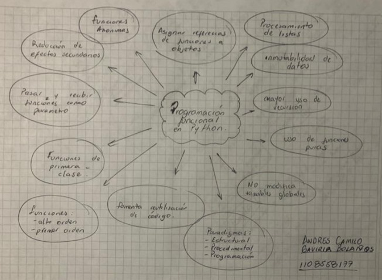
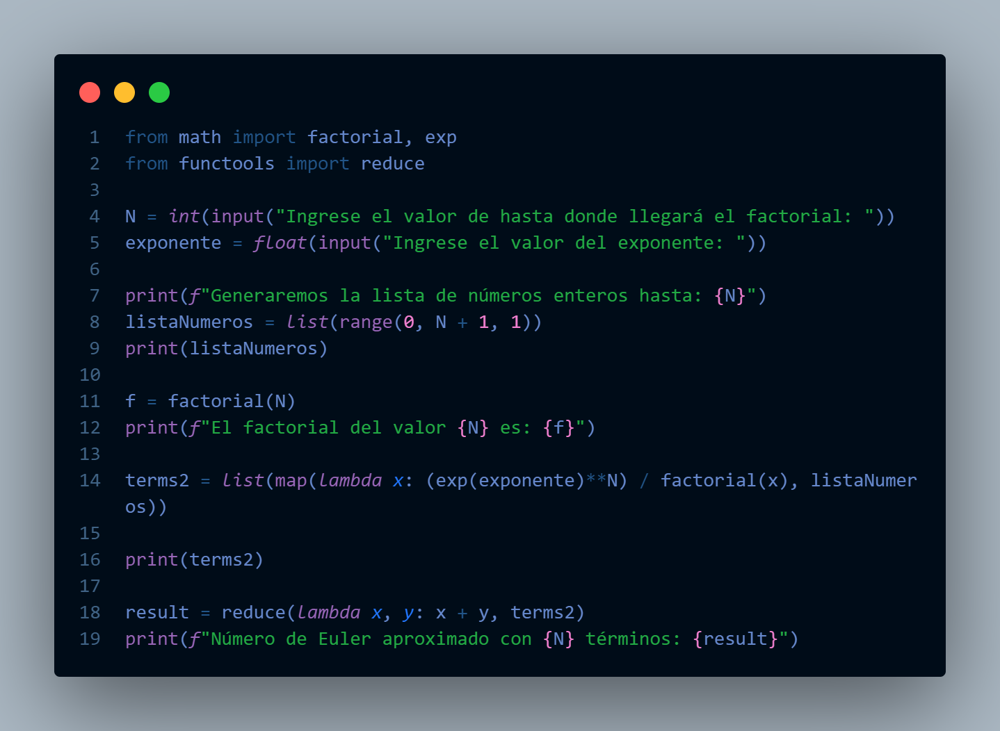
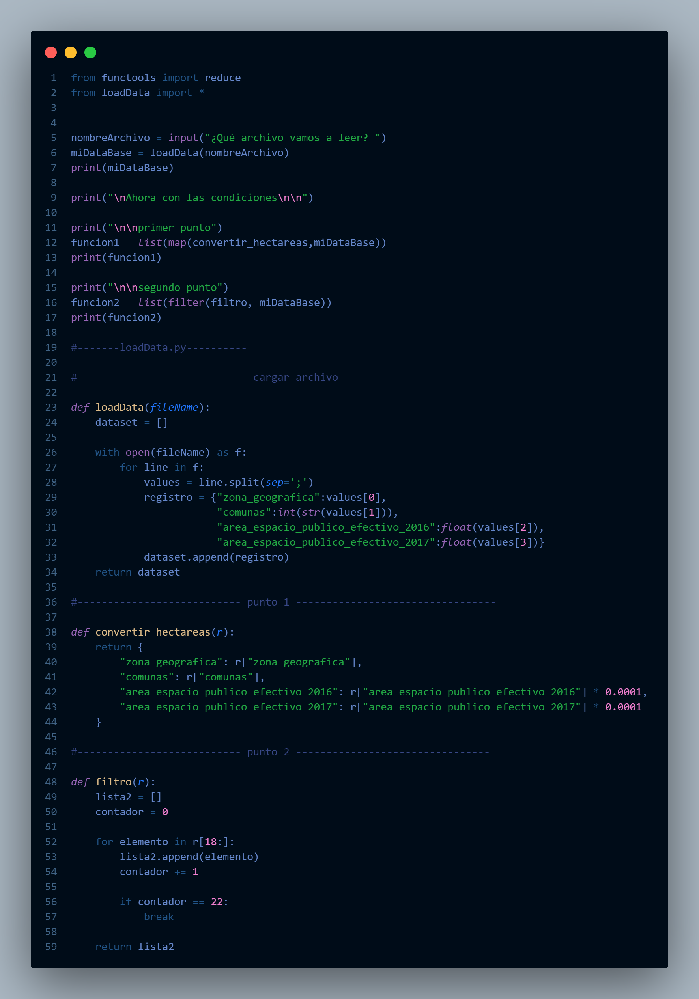
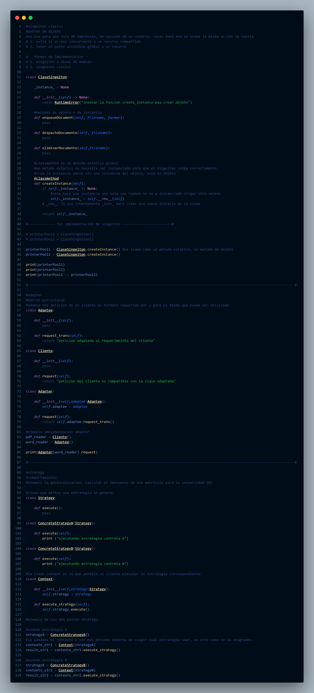
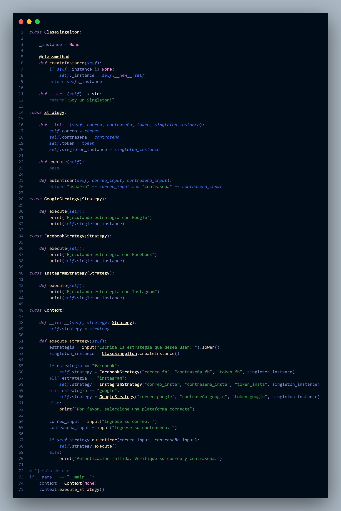

Hola!, como mencione antes aqui te mostrare un poco de lo que hice este
semestre
Para comenzar por esta materia, lo primero que debimos aprender es un poco de python,
y asi fue como comenzamos, dando nuestros primeros pasos, las funcionalidades de este Lenguajes,
y en cada clase un poco mas de lo que podriamos llegar a hacer o simular con nuestros conocimientos
para luego tener un examen simulando la sumatoria de Euler, y mas!
Algunos temas son:
- Primeros pasos en pthon
- Funciones de primer orden y alto orden
- Caracteristicas de python
- Programacion funcional en python
- Funcion Reduce
- Funciones Anonimas
- Funcion MAP
- Simulacion Euler
- Patrones de diseño
- Patron de diseño Singelton
- Patron de diseño Strategy
Aqui te muestro un mapa mental que realizamos acerca de la programacion funciona en python

Aqui te muestro un codigo que realizamos acerca de la sumatoria de Euler

Aqui te muestro un codigo que realizamos acerca de cargar arcchivos y usando la funcion MAP, reduce y asi mismo trabajar con listas y mas!

En este ejemplo lo que hicimos fueron nuestro primeros pasos con singelton y a la vez adapter, dos patrones supremamente importantes
para despues trabajar con una metodologia de pago gracias al paton strategy, un login con singelton, miralos a continuacion:
Primeros pasos singelton-strategy

Ejercicio de login singelton-strategy

ejercicio de pagos strategy-adapter
Y eso es todo por este corte, sigue con los siguientes para ver mas acerca de mi progreso!